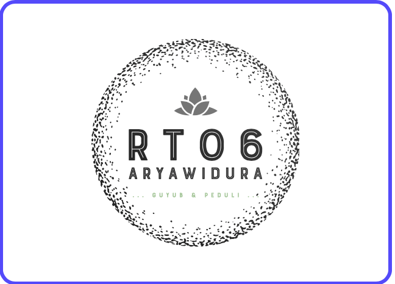

Paguyuban Warga RT 06

Aryawidura Residence
Jalan Aryawidura No. 1
RT 06 RW XIV/14
Kel. Tegal Gundil, Bogor Utara
Kode Pos 16152
0251-7557008
rt6.aryawidura@gmail.com
Our History
Paguyuban Warga RT 06 adalah wadah informal warga RT 06 RW XIV Kel. Tegal Gundil Kec. Bogor Utara Kota Bogor bersama-sama menjalin keguyuban antar tetangga dengan ciri khas kepedulian kepada sesama tetangga dan lingkungan tempat tinggal khususnya di kawasan residensial/perumahan kompleks Aryawidura Reseidence termasuk beberapa warga yang tinggal di Jalan Achmad Adnawidjaja (Jl. Pandu Raya).
Walaupun sifatnya informal, namun Paguyuban Warga RT 06 memiliki “kekuatan” sebagai “jiwa” dari warga yang berhak dan berkewajiban mengawasi pelaksanaan kegiatan warga yang diselenggarakan oleh Pengurus RT. Kekuatan Paguyuban Warga adalah memberhentikan Ketua RT dan atau membubarkan kepengurusan RT berdasarkan usulan warga atas alasan yang sah dan masuk akal yang diatur dalam Anggaran Dasar RT 06 yang berlaku.
Forum komunikasi sehari-hari Paguyuban Warga RT 6 dilakukan melalui grup Whatsapp ” Paguyuban Warga RT 6 “. Apabila Anda adalah warga yang tinggal dan menetap di RT 6, berstatus sebagai Kepala Keluarga atau Penanggung Jawab di alamat domisili di RT 6, maka dipersilakan untuk bergabung di WA grup tersebut dengan menghubungi Sekretariat RT 6 melalui email : rt6.aryawidura@gmail.com atau twitter @rt6_arwid. Segala macam surat menyurat korespondensi dari Pengurus RT 6 juga secara resmi terutama hanya dilakukan melalui channel WA grup tersebut.
Dibuat menggunakan HTML
Asep Iwan Gunawan
rt6.aryawidura@gmail.com
(0251) 755 7008